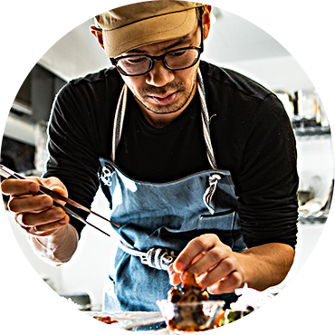
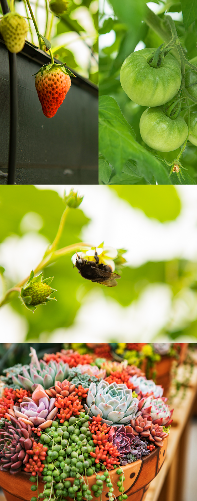
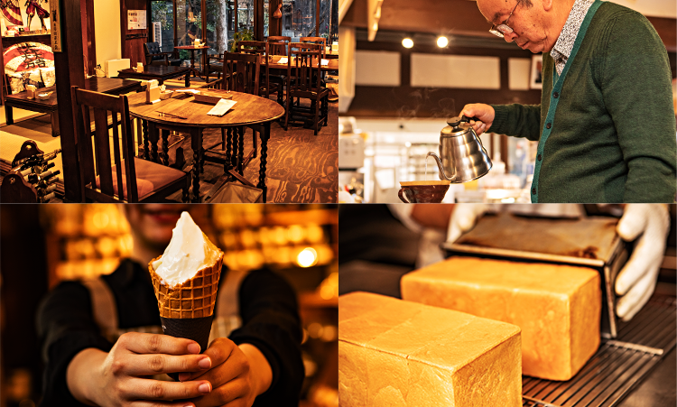

滋賀県⽶原の⾃然に囲まれた古⺠家のリラックス空間と、本場イタリアンシェフによる天然素材をベースとした、イタリアン料理やケーキ、パンやカフェのお店です。
歴史ある近江の國、米原の古民家カフェ。
Cafe du MBF は滋賀県米原、歴史のある
近江圀の自然に囲まれた古民家にあります。
当店では本場イタリアで長年修業を積んだシェフが、
体にやさしい素材を自家栽培などで厳選し、
本格イタリアンからケーキ、パンをご提供しております。
リラックスした時間で最高の贅沢をお届けいたします。


- 2019.01.15
- ウェブサイトオープンしました。ウェブサイトオープンしました。ウェブサイトオープンしました。
- 2019.01.15
- ウェブサイトオープンしました。ウェブサイトオープンしました。ウェブサイトオープンしました。ウェブサイトオープンしました。ウェブサイトオープンしました。ウェブサイトオープンしました。
- 2019.01.15
- ウェブサイトオープンしました。ウェブサイトオープンしました。ウェブサイトオープンしました。ウェブサイトオープンしました。ウェブサイトオープンしました。ウェブサイトオープンしました。

Chef HARIMA
全て手づくり。
料理歴10年のシェフが調理いたしております。
極力地産を意識し地元の食材をメインにソースやダシから手作りしております。帰り際に美味しい、また来たいと思ってもらえるようにこだわって作っております。自家製麺や農園で採れたトマトなど季節限定のメニューも人気です。
営業時間
ランチ11:30-14:30 L.O.14:00
ナポリコース ¥1,500 / ミラノコース ¥2,500
ディナー17:00-22:00 L.O.21:00
ローマ ¥3,500 / フィレンツェ ¥4,500 / ベネチ ¥5,500
tel 0749-52-5330
予約可
オーナー自ら豆を見極め焙煎。その時に必要な分だけ焼いているので焼きたて、挽きたて、入れたて。石焼焙煎は遠赤外線で焙煎しているので豆の芯まで火が通っていてまろやかで飲みやすくて香りが高い。
オーガニック、カフェインレスもあり。
毎日食べれるような飽きのこないパンを目指している。一つ一つ丁寧に工房で焼き上げます。
特に食パンは国産小麦を使用して優しい味に仕上げている。

Cafe du MBF は自然栽培を基礎としたガーデニングも、
日付限定で解放しております。
また様々なワークショップを開催しております。
解放日程やワークショップ詳細は、
お問い合わせください。
0749-47-6996
担当 / 一圓

営業時間
8:30-22:00
［ケーキ・パンのみ19:00］
イタリアン営業時間
ランチ11:30-14:30 L.O.14:00 / ディナー17:00-22:00 L.O.21:00
［パン・ケーキはテイクアウトもできます。］
tel 0749-52-5330
イタリアン予約可
定休日 / 水曜日
（ほか不定休あり）

〒521-0012 滋賀県米原市米原661-6
JR 近江鉄道米原駅より徒歩10 分
［駐車場あり］